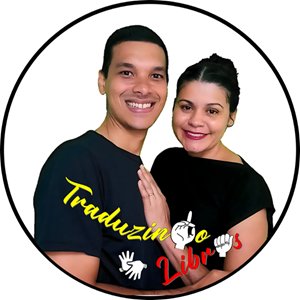

Interpretação Simultânea
Tradução ao vivo para eventos, congressos, reuniões executivas e palestras. Dinamismo e precisão para garantir que a mensagem chegue em tempo real.
A Lei Brasileira de Inclusão (LBI) exige acessibilidade. Nós entregamos excelência. Garanta que sua empresa, evento ou material audiovisual comunique-se com a comunidade surda com precisão, ética e qualidade profissional.
Solicitar Orçamento
Somos Danilo e Andressa Bertolani, intérpretes e tradutores de LIBRAS (TILSP) com sólida trajetória no mercado de acessibilidade. Nossa missão é romper barreiras comunicacionais, proporcionando uma experiência de tradução fiel, fluida e culturalmente adequada.
Com vasta experiência no atendimento de demandas corporativas de alto nível — incluindo atuações estratégicas para grandes instituições financeiras e eventos de grande porte — compreendemos a dinâmica do mundo dos negócios. Entregamos não apenas a tradução, mas a segurança jurídica e a imagem de responsabilidade social que sua marca precisa.
Flexibilidade de Contratação: Nosso objetivo é viabilizar a acessibilidade no seu projeto de forma ágil e segura. Adaptamos nosso formato de contratação à realidade da sua empresa: atuamos em forte parceria com agências B2B para demandas de Interpretação e Janela de LIBRAS que exigem compliance corporativo rigoroso, e oferecemos contratação direta para Treinamentos In-Company e serviços compatíveis. Entre em contato e estruturaremos a melhor solução para a sua demanda.
Tradução ao vivo para eventos, congressos, reuniões executivas e palestras. Dinamismo e precisão para garantir que a mensagem chegue em tempo real.
Gravação de janela de LIBRAS com padrão técnico para vídeos institucionais, EAD, campanhas publicitárias e redes sociais.
Tradução de textos do Português para LIBRAS (vídeo) e de vídeos em LIBRAS para o Português. Essencial para editais, manuais e sites.
Orientação estratégica para empresas que desejam adaptar seus ambientes, eventos ou produtos digitais de acordo com as normas da LBI e WCAG.
Capacitação Básico/Intermediário para equipes de atendimento (RH, recepção, vendas). Aulas focadas na Cultura Surda para tornar sua empresa inclusiva.
Para eventos extensos, atuamos em regime de revezamento. Isso previne lesões (LER/DORT) e garante a máxima qualidade cognitiva da tradução do início ao fim.
Adequamos a contratação à sua burocracia. Atuamos via agências parceiras para grandes demandas corporativas e oferecemos faturamento direto para capacitações e serviços alinhados.
Atendimento online para todo o Brasil. Atendimento presencial com base em Itaperuna/RJ, abrangendo distritos e regiões próximas.
Para transmissões remotas e gravação de Janela de LIBRAS, operamos em estúdio próprio com ambiente chroma key. Utilizamos captura em alta resolução com câmeras DSLR (série Canon) via OBS Studio, iluminação profissional com softboxes e ring lights, além de conexão redundante, garantindo estabilidade e excelência audiovisual.